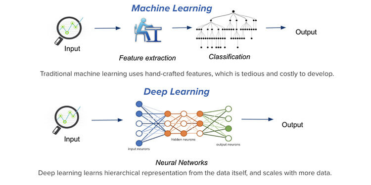

2 Introducción al Aprendizaje Automático
El aprendizaje automático (AA) (Machine Learning en inglés) es una disciplina científica que suele incluirse en el ámbito de la Inteligencia Artificial (IA) que crea sistemas que aprenden automáticamente. Aprender en este contexto quiere decir identificar patrones complejos en millones de datos. La máquina/ordenador que realmente aprende es un algoritmo que usando datos existentes es capaz de predecir comportamientos futuros. Automáticamente, también en este contexto, implica que estos sistemas se mejoran de forma autónoma con el tiempo, sin intervención humana. En esta figura podemos observar la conexión que hay entre estas áreas y una más reciente conocida como aprendizaje profundo (AP) (Deep Learning en inglés) que veréis en el curso de Aprendizaje Automático 2.
Relación entre AA, AI y AP
La principal diferencia entre estas áreas radica en el objetivo (e.g pregunta científica) que queremos tratar. Así, la IA vendría a representar a un sistema no biológico que es inteligente basándose en reglas. El AA se basa en algoritmos que entrenan modelos usando datos existentes, y el AP se basa en algoritmos que parametriza redes neuronales de múltiples capas que representan los datos mediante diferentes niveles de abstracción.
En la siguiente figura podemos ver la clasificación (de manera muy genérica) de los tipos de AA a los que podemos enfrentarnos
Tipos de Aprendizaje Automático
Sobre 2010 el AP (Deep learning) obtuvo una gran popularidad ya que ha permitido acercarse a sitemas de inteligencia artificial de forma más eficientge que ML. Los tres términos están ligados y cada uno forma una parte esencial de los otros. DL permite llevar a cabo ML, que en última instancia permite la AI.
No obstante, es más fácil aprender ML como herramienta para AI. Debería realizarse un curso más avanzado para estudiar técnicas de DL que quizás no sean de mucha utilizad en problemas de biomedicina aplicados en ciencias de la salud, donde las bases de datos no son tan grandes ni complejas como las que pueden aparecer, por ejemplo, en el análisis de imágenes o en la genómica.
En la siguiente figura podemos observar la principal diferencia entre AA y AP donde básicamente el AA pretende seleccionar aquellas variables que mejor predicien nuestra varaible respuesta y creando un modelo que ayude a dicha clasificación y el AP es una especi de “caja negra” donde todas las variables disponibles pasan a formar parte de un sistema que, replicando lo que hace el cerebro humano, aprende a cómo predecir nuestra variable resultado

Un ejemplo claro y muy usado en nuestra vida cotidiana es la eliminación del rojo que aparecía antiguamente en las fotos. El modelo de AP es capaz de detectar un ojo en una imagen y elimiar dicho de color de forma automática
Sin embargo, el AA trata problemas más sencillos que suelen ser a los que nos enfretamos en los estudios biomédicos en salud. En estadística, el AA se ha considerado como una ciencia independiente en la que se dispone de un conjunto de herramientas basadas en diferentes métodos y algoritmos que permiten clasificar individuos según una serie de variables. Concer estas técnicas estadísticas es de gran ayuda para la IA y el AP.
Este es un ejemplo donde a partir de dos variables se intenta crear/entrenar un modelo (o regla de decisión - línea curva negra) que nos permita clasificar individuos para los que desconocemos su variable respuesta (figura de la derecha).
Existen muchos métodos para llevar a cabo esta tarea y que permitan ser usados en la práctica clínica o en la toma de decisiones a nivel epidemiológico o de salud poblacional. Los cursos de aprendiaje automático normalmente suelen hablar de estos modelos/algoritmos de preducción
- Regresión logística
- Árboles de clasificación
- Análisis lineal discriminante
- KNN
- Regresión lasso (ridge, elastic net)
- Random Forest
- Boosting
- XGBoost
En este primer curso introductorio hablaremos de los dos primeros métodos que son bastante usados en problemas de salud y también trataremos aspectos muy importantes para la creación de estos modelos predictivos que incluyen:
- cómo evaluar la capacidad predictiva de un modelo,
- cómo validar los modelos mediante validación cruzada,
- cómo tratar problemas de clasificación con grupos desbalanceados, y
- cómo crear nomogramas (y Shiny Apps automáticas) para usar estos modelos predictivos en la práctica clínica
Con esta base, en un segundo curso más avanzado, podremos ver técnicas más sofisticadas que permitirán crear modelos con mejor capacidad predictiva que la regresión logística o los árboles de clasificación. Estas incluyen el boosting, XGboost o la regresión lasso que permite analizar datos con muchas más variables que individuos.